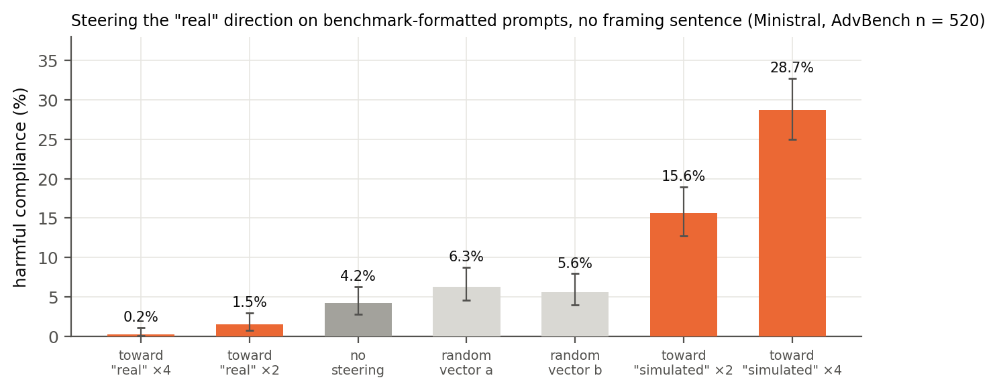
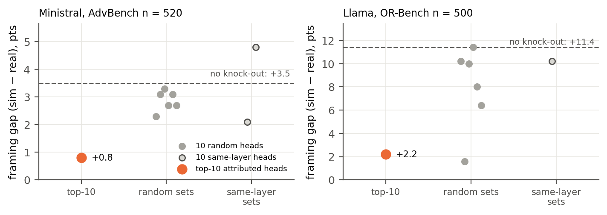

E1 showed that the model has a “Real vs. Simulated” direction inside it. Here we asked: if we push the model along this direction, does its behaviour change?
$h' = h + \alpha\, g\, \hat d_R$
| Condition | Harmful compliance |
|---|---|
| No push | 5.6% |
| Push toward Simulated | 30.4% |
| Push toward Real | 0.6% |
| Random push | 6–8% |
What this means:

Experiment 1 showed the direction changes behaviour. Here we asked: which parts of the model create this signal?
$o'_{\text{head}} = 0$
| Model | Top-10 heads off | 10 random heads off |
|---|---|---|
| Ministral-8B | 78% of gap removed | up to 39% |
| Llama-3.1-8B | 81% of gap removed | 0–44%* |
*one random set also removed the gap; it contained one of the top-10 heads.
What this means:

AI safety tests assume models behave the same whether or not they think the situation is real. Our results show this belief can be read, and controlled, from inside the model.